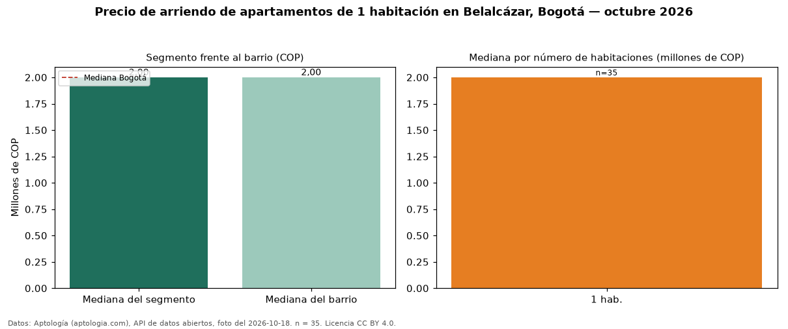

Precio de arriendo de apartamentos de 1 habitación en Belalcázar, Bogotá — octubre 2026
COP 2.000.000 al mes es el canon mediano de apartamentos de 1 habitación en arriendo en Belalcázar (localidad de Teusaquillo), Bogotá (n = 35 avisos). La mediana prácticamente coincide con la de Bogotá para apartamentos de 1 habitación (COP 2.100.000; diferencia de -4,8 %). Son 78 % de los 45 avisos de apartamentos en arriendo del barrio, cuya mediana general es COP 2.000.000 (+0 %). Con la mediana de venta del mismo barrio y tamaño (COP 311 millones), el arriendo anual equivale a 7,7 % del precio de venta: una aproximación gruesa a la rentabilidad bruta, porque compara medianas de ofertas distintas. Datos: Aptología (aptologia.com), API de datos abiertos, licencia CC BY 4.0 — https://www.aptologia.com/arriendo/bogota/belalcazar. Archivos: PDF de 2 páginas, CSV con las cifras y gráfica PNG.

| Avisos únicos | 35 |
|---|---|
| Percentil 25 | — |
| Mediana | COP 2.000.000 |
| Percentil 75 | — |
Fuente: avisos vigentes de portales inmobiliarios recopilados por Aptología, deduplicados (mínimo 30 avisos únicos por celda). Precios pedidos, no cerrados. Fecha: 2026-10-18.